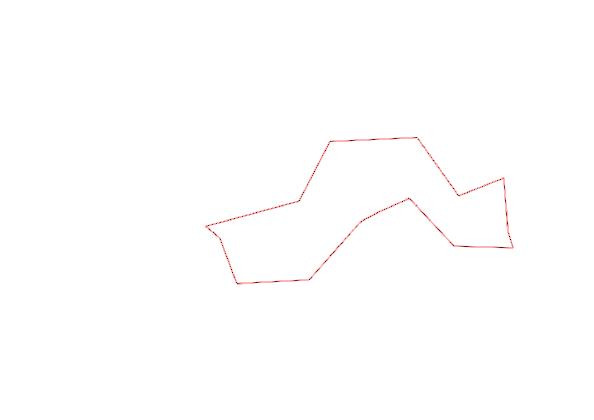
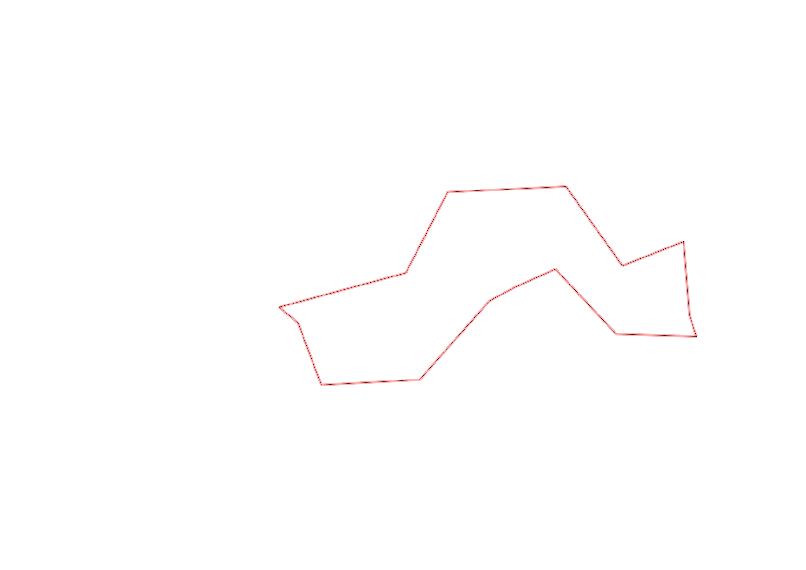

| Control |
Points |
Time Punched |
Distance |
Your Time |
Pace |
Place |
Fastest Time |
Median Time |
% Behind Fastest |
| 127 |
20 |
|
0.06 |
0:00:52 |
14:26 |
24 / 30 |
0:00:01 |
0:00:32 |
5100% |
| 42 |
40 |
|
0.17 |
0:01:54 |
11:10 |
11 / 20 |
0:01:06 |
0:01:52 |
72% |
| 37 |
30 |
|
0.26 |
0:07:25 |
28:31 |
9 / 9 |
0:02:45 |
0:03:57 |
169% |
| 48 |
40 |
|
0.28 |
0:07:26 |
26:32 |
5 / 5 |
0:04:03 |
0:04:43 |
83% |
| 64 |
60 |
|
0.07 |
0:01:13 |
17:22 |
8 / 14 |
0:00:38 |
0:01:05 |
92% |
| 49 |
40 |
|
0.12 |
0:02:06 |
17:30 |
8 / 12 |
0:00:55 |
0:01:28 |
129% |
| 46 |
40 |
|
0.23 |
0:02:56 |
12:45 |
5 / 8 |
0:02:06 |
0:02:39 |
39% |
| 75 |
70 |
|
0.21 |
0:04:07 |
19:36 |
7 / 7 |
0:02:06 |
0:02:33 |
96% |
| 56 |
50 |
|
0.06 |
0:01:47 |
29:43 |
7 / 8 |
0:00:25 |
0:00:39 |
328% |
| 81 |
80 |
|
0.19 |
0:04:01 |
21:08 |
7 / 7 |
0:00:54 |
0:01:17 |
346% |
| 52 |
50 |
|
0.17 |
0:02:37 |
15:23 |
6 / 6 |
0:01:09 |
0:01:25 |
127% |
| 109 |
100 |
|
0.26 |
0:03:47 |
14:33 |
9 / 9 |
0:01:20 |
0:02:00 |
183% |
| 123 |
20 |
|
0.31 |
0:03:56 |
12:41 |
9 / 10 |
0:01:36 |
0:02:50 |
145% |
| 47 |
40 |
|
0.24 |
0:05:20 |
22:13 |
5 / 6 |
0:02:32 |
0:03:41 |
110% |
| Finish |
0 |
|
0.34 |
-1 day, 23:10:33 |
68:09:51 |
1 / 4 |
-1 day, 23:10:33 |
0:03:22 |
0% |
Total Distance Covered: 2.97km
Points Scored: 680
Late Penalty: 0
Final Score: 0
Total Time: 0hours 0minutes 0seconds
Efficiency: 0.0 points/km
 
